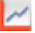
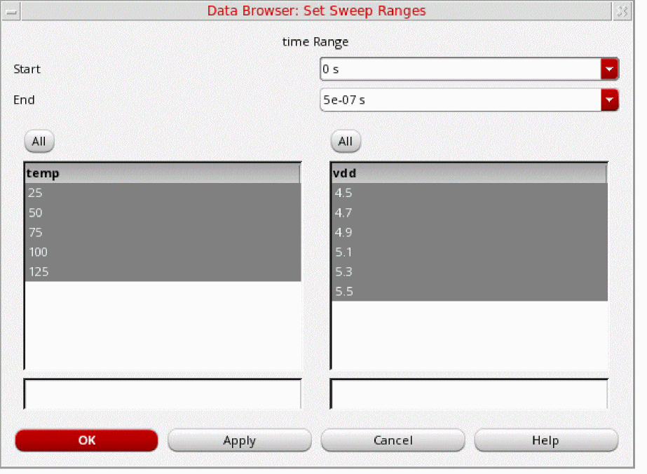
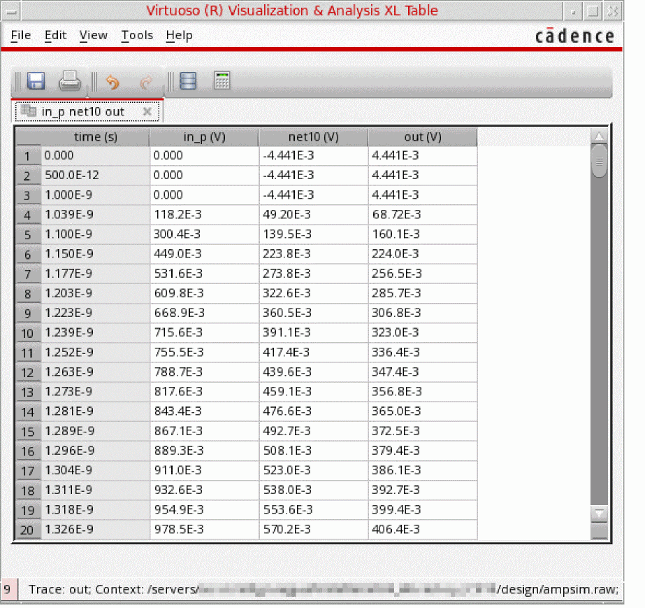

2
Results Browser
Results browser is an assistant in Virtuoso Visualization and Analysis XL that you can use to access the simulation results that you saved to work on later in a different session. Results Browser displays simulation results (signals) in a hierarchical arrangement that corresponds to the hierarchy of your design, making it convenient for you to locate and manage simulation data.
The results for each simulation are stored in a separate results directory. In addition, the results for different analysis types are stored in separate folders. For example, all simulation results for all transient analyses are contained in the tran directory. The various signals in a results directory are displayed in the Results Browser in a hierarchy that is determined by the design.
You can load multiple results directories in the Results Browser. The first directory that you load in the Results Browser becomes the in-context results directory. This means that the expressions in the Calculator are evaluated and the signals displayed in the graph are plotted by using the data available in the in-context results directory.
To change the in-context results directory, see Changing In-Context Results Directory.
The following figure shows the Results Browser assistant.
Related Topics
Results Browser Graphical User Interface
Selecting a Signal in the Results Browser
Plotting a Signal from the Results Browser
Opening the Results Browser
You can open the Results Browser in any of the following ways:
- Opening the Results Browser in Standalone Mode
- Opening the Results Browser from Virtuoso
- Opening the Results Browser from Virtuoso Analog Design Environment
Opening the Results Browser in Standalone Mode
To open the Results Browser in standalone mode:
-
Run the following command in a terminal window:
viva -expr SKILL
The Virtuoso (R) Visualization & Analysis XL window appears with the Results Browser displayed on the left. -
To open a result directory in the Results Browser, specify the
viva -dataDircommand-line option as follows:viva -dataDir "./simulation/WirelessLib/wireless_LTE/maestro/results/maestro/ExplorerRun.0/psf/Wireless/psf"
The specified results directories are opened in the Results Browser with the last-specified directory as in-context results directory.
By default, Virtuoso Visualization and Analysis XL opens in SKILL mode.
Opening the Results Browser from Virtuoso
To open the Results Browser from Virtuoso:
-
From the CIW, choose Tools – ViVA XL – Results Browser.
The Virtuoso (R) Visualization & Analysis XL window appears with the Results Browser displayed on the left.
Opening the Results Browser from Virtuoso Analog Design Environment
To open the Results Browser from Virtuoso ADE Assembler or Virtuoso ADE Explorer:
-
From the menu bar, choose Tools – Results Browser.
The Virtuoso (R) Visualization & Analysis XL window appears with the Results Browser displayed on the left.
Related Topics
Results Browser Graphical User Interface
Results Browser Graphical User Interface
The following figure shows the graphical user interface (GUI) of the Results Browser:
The Results Browser GUI consists of the following elements:
Toolbar of the Results Browser
The following table describes the toolbar icons of the Results Browser.
Top Panel of the Results Browser
The top panel of the Results Browser displays all loaded results directories in a tree view. The icon  displayed next to a results directory indicates that it is a PSF directory.
displayed next to a results directory indicates that it is a PSF directory.
The following table describes the context-menu commands that appear when you right-click a results directory in the top panel.
| Icon | Command Name | Description |
|---|---|---|
|
Sets the selected directory as the in-context results directory. |
Bottom Panel of the Results Browser
The bottom panel displays the contents of the selected database in a list view.
The following table describes the context-menu commands that appear when you right-click a signal in the bottom panel.
Related Topics
Opening a Results Directory
To open a results directory in the Results Browser:
-
From the menu bar of the Virtuoso Visualization and Analysis XL, choose either File – Open Results or Browser – Results – Open Results.
The Select Waveform Database form opens.
- In the Look in field, browse to locate the results directory that you want to open. If required, you can open multiple results directories. By default, this field displays the path of the directory from where the you opened the results recently in the Results Browser.
-
Select the results directory that you want to open. You can select multiple directories at a time by using the
Ctrlkey. -
Click Open.
The selected results directory is opened in the Results Browser. If this is the first directory that is opened in Results Browser, it is displayed in green and the icon is displayed next to the directory name to indicate that it is the in-context results directory.
is displayed next to the directory name to indicate that it is the in-context results directory.
The icon is displayed next to the directories that contain simulation data.
When you point to a folder of a database in the Results Browser, the following information is displayed as a tooltip.
- Format: Format in which simulation results are saved in the results directory.
- Analysis Type: Type of analysis performed.
- Description: Description of the analysis performed.
- Date: Date and time of the simulation results.
-
Simulator: Name of the simulator.
Related Topics
The Select Waveform Database Form
Selecting a Signal in the Results Browser
Setting the In-Context Results Directory
Plotting a Signal from the Results Browser
Setting the In-Context Results Directory
To change the database context directory from the Results Browser:
- Open the results directory that you want to set as the context directory in the Results Browser.
-
Right-click the results directory and choose Set Context.
The database context is set to the selected results directory.
The results directory that is selected as the context directory is displayed in green and the icon is displayed next to it.
Setting the in-context results directory plays an important role in performing the following tasks:
Interactive.3 and you plot the signal /OUT with three traces C0_0, C0_1 and C0_2 from corner C0. Now, if you change the context to Interactive.4, which has the five traces C0_0, C0_1, C1_0, C1_1, C1_2 from corner C0 and C1. Using Reload plots all these five traces from corner and C1.Related Topics
Selecting a Signal in the Results Browser
Plotting a Signal from the Results Browser
Selecting a Signal in the Results Browser
In the Results Browser, the top panel displays the results directories and the bottom panel displays the datasets in the selected results directory.
To select a signal in the Results Browser:
-
Double-click a results directory in the top panel.
The results directory is expanded and the folders containing data from different analyses are displayed in the bottom panel.
The icon, displayed next to a directory in a list, indicates that the directory contains subdirectories. You can double-click the directory to display or to hide the subdirectories. -
Double-click a dataset directory.
The signals are displayed in the bottom panel. Each signal has an icon displayed next to it, which indicates the signal type. - Right-click the signal and choose the command to either plot it or to send it to the Calculator or Table.
Related Topics
Plotting a Signal from the Results Browser
Sending a Signal to Calculator from Results Browser
Sending a Signal to Table from Results Browser
Plotting a Signal from the Results Browser
To plot a signal from the Results Browser:
-
In the Results Browser, click the Open Results
icon.
The Select Waveform Database form opens.
- Navigate to a results directory.
- Select a results database.
-
Click Open.
The selected results directory opens in the Results Browser.
-
In the results directory, navigate to the results folder that contains the signal you want to plot.
-
Select the signal you want to plot and click the Plot Signals
icon in the toolbar of the Results Browser. Hold down the
Ctrlkey to select multiple signals.
Alternatively, right-click the signal and choose Plot Signal.
The selected signal is plotted in the current graph window or subwindow.
Related Topics
The Select Waveform Database Form
Plotting a Transient Signal Over a Time Range
Plotting an AC Signal over a Frequency Range
Plotting Parametric Sweep Data
Plotting the Difference of Two Signals
Comparing Signals from Different Results Directories
Plotting a Transient Signal Over a Time Range
You can plot transient data over a time range. To specify the time range for a transient dataset:
- In the Results Browser, select a transient signal.
-
From the toolbar of the Results Browser, click Select Sweep Data
.
The Data Browser: Set Sweep Ranges form opens.
-
In the Start and End fields, specify the time range over which you want to plot the transient signal.
If you want the graph to be plotted between the first and last data points of the signal, select Default from the Start and End drop-down lists, respectively.
The default values of Start and End fields depend on the selected transient signal. - Click OK.
-
Click Plot Signals
 from the toolbar of the Results Browser to plot the transient data over the specified time range.
from the toolbar of the Results Browser to plot the transient data over the specified time range.
The following example shows the transient signaloutplotted over the time range between1nsand6ns.
Related Topics
Plotting an AC Signal over a Frequency Range
Plotting Parametric Sweep Data
Plotting the Difference of Two Signals
Comparing Signals from Different Results Directories
Plotting an AC Signal over a Frequency Range
You can plot an ac signal over a frequency range. To specify the frequency range for an ac signal:
- In the Results Browser, select an ac signal.
-
From the toolbar of the Results Browser, click Select Sweep Data
 .
.
The Data Browser: Set Sweep Ranges form opens.
-
In the Start and End fields, specify the frequency range over which you want to plot the ac signal.
If you want the graph to be plotted between the first and last data points of the signal, select Default from the Start and End drop-down lists, respectively.
The default values of Start and End fields depend on the selected signal. - Click OK.
-
Click Plot Signals 
from the toolbar of the Results Browser to plot the ac signal over the specified frequency range.
The following example shows an ac signaloutplotted over the frequency range between2Hzand1e+06Hz.
Related Topics
Plotting a Signal from the Results Browser
Plotting a Transient Signal Over a Time Range
Plotting Parametric Sweep Data
Plotting the Difference of Two Signals
Comparing Signals from Different Results Directories
Plotting Parametric Sweep Data
A parametric analysis sweeps a parameter or a group of parameters and runs one or more analyses for each combination of parameters. The Virtuoso Visualization and Analysis XL tool helps you analyze the resulting data efficiently.
To plot a part of parametric swept data:
-
In the Results Browser, select a parametric signal.
The following example shows a parametric signalout, which has two sweeping variablestempandvdd.
-
From the toolbar of the Results Browser, click Select Sweep Data
 .
.
The Data Browser: Set Sweep Ranges form opens. The Start and End fields display the range of the signal. All thetemp(temperature) andvdd(inner sweep variable) values are selected by default.
 -
From the temp list, click
25.0. Hold down theCtrlkey to select multiple values, and click75.0, and125.0. -
From the
vddlist, click4.5. Hold down theCtrlkey, and click4.7,5.1, and5.3.
You can also use this form to filter and sort sweep variables by typing their values in the boxes at bottom. - Click OK.
-
In the Results Browser, right-click the
outsignal and choose New Window.
The graph window appears with the traces plotted for the parametric family. Each trace in the family is annotated by a sweep path that describes the parameter-value pair.
Related Topics
Plotting a Signal from the Results Browser
Plotting a Transient Signal Over a Time Range
Plotting an AC Signal over a Frequency Range
Plotting the Difference of Two Signals
Comparing Signals from Different Results Directories
Plotting the Difference of Two Signals
To plot the difference of two signals:
-
In the Results Browser, select the first signal. For example,
out. -
In the Results Browser, select the second signal (for example,
in_p), and then click Diff of 2 Signals .
.
Alternatively, you can first click Diff of 2 Signals , and then select the second signal.
The difference of the two signals is plotted in the current subwindow.
Related Topics
Plotting a Signal from the Results Browser
Plotting a Transient Signal Over a Time Range
Plotting an AC Signal over a Frequency Range
Plotting Parametric Sweep Data
Comparing Signals from Different Results Directories
Plotting YvsY for Two Signals
You can plot y-axis values of one signal versus y-axis values of another signal. You can plot YvsY to measure input offset voltage, which displays the offset between the input and output of the circuit.
-
In the Results Browser, select the first signal. For example,
out. -
In the Results Browser, select the second signal (for example,
in_p), and then click YvsY of 2 Signals .
.
Alternatively, you can first click YvsY of 2 Signals , and then select the second signal.
The YvsY of the two signals is plotted in the current subwindow.
Related Topics
Plotting a Signal from the Results Browser
Plotting a Transient Signal Over a Time Range
Plotting an AC Signal over a Frequency Range
Plotting Parametric Sweep Data
Plotting the Difference of Two Signals
Comparing Signals from Different Results Directories
Comparing Signals from Different Results Directories
If you run multiple simulations on the same data, multiple results directories containing the same signals with different values are generated.
You can open these results directories in the Results Browser to compare the signals contained in the results directories. The signals from all the results directories are plotted in a graph window in the append mode to facilitate comparison.
The following figure shows multiple results directories that are created after running simulations on same data.
To compare signals from different results directories:
-
Select a signal in the Results Browser, and click Plot signal from all the open DBs
in the toolbar of the results browser.
Alternatively, right-click a signal in the Results Browser, and click Plot from all DBs .
.
The following figure shows the signalOUTNplotted from two different results directories. The two signals are overlapped because they have same data values.
Related Topics
Selecting a Signal in the Results Browser
Plotting a Signal from the Results Browser
Exporting Waveforms from a Single Results Directory
You can export a signal from a results directory in a variety of formats and later load these signals in the required application. You can also save a part of the dataset by specifying the start and end values or interpolate data before saving it.
To export a waveform from a single results directory:
-
Right-click a signal in the Results Browser and choose Export.
Alternatively, select a signal in the Results Browser and choose Browser – Results – Export from the menu bar of Virtuoso Visualization and Analysis XL.
The Export Waveforms form opens.
- In the File name field, type the name of the file to which you want to export the selected waveforms.
- From the Files of type drop-down list, select one of the following formats: VCSV, Matlab, PSF, SPECTRE, SST2, CSV, or PSFXL.
-
Select the Use names from graph check box to use the trace names that are displayed on the graph.
This check box is disabled when you export a signal from the Results Browser. -
If you are exporting signals in CSV format, select the Include Corner info check box to print the corner information in the header of the CSV file.
The Include Corner info check box appears dimmed and becomes available only if CSV is selected from the Files of type drop-down list. - Select the Only Save Subset of Data check box to export only the required part of the waveform or signal.
- In the X Range Start and End fields, specify the start and the end points of the x range for which you want to export the waveform.
- Select the Resample with Step Size check box to specify the step size to resample the exported data based on linear interpolation. The greater the step size, the fewer data points in the exported data.
- Select the Use Log Interpolation check box to use the logarithmic scale for interpolation.
- In the Significant Digits field, specify the number of significant digits in the exported values from waveform data.
-
From the When the range boundary does not match a data point options, select one of the following:
- Include first data point outside the range: Includes the first data point that immediately falls before the specified X Range Start value and the last data point that falls immediately after the specified X Range End value when there are no actual data points corresponding to the specified X Range Start and End values
- Only include data points inside the range: Includes only actual data points inside the specified x range.
- Add new point on the range boundary by interpolation: Includes the interpolated values for the specified range boundary (X Range Start and End values) when there are no actual data points corresponding to the specified X Range Start and End values.
- Click Save.
Waveform data is exported to a file in the specified format.
The following example shows the contents of the VCSV file when you export signals out and in_p in VCSV format.
When you export a signal in the MATLAB format, a file with the.matlab extension is created, for example, test.matlab. To open this file in MATLAB, type the following command in the MATLAB terminal window:
T=readtable('test.matlab','FileType','text')
This command creates a text-based table from the file and lists the file contents in tabular format.
Related Topics
Exporting Waveforms from Multiple Results Directories
The Waveforms to be Exported Form
Contents of the Exported VCSV File
The header of the VCSV file contains the version, signal names, x and y axes names, type of data, and x and y axes units.
The description of the VCSV file format is as follows.
<ASCII> ::= <HEADER> <WAVEFORMS> <br>
<HEADER> ::= <VERSION> <TITLES> <AXES> <TYPES> <AXISNAMES> <UNITS> <br>
<VERSION> ::= <COM> Version, <MAJOR>, <MINOR> <br>
<TITLES> ::= <COM> <TITLE> [,<TITLE>]... <br>
<AXES> ::= <COM> <X_AXIS>, <Y_AXIS> [,<X_AXIS>, <Y_AXIS>]...<br>
<TYPES> ::= <COM> <X_TYPE>, <Y_TYPE> [,<X_TYPE>, <Y_TYPE>]...<br>
<UNITS> ::= <COM> <X_UNIT>, <Y_UNIT> [,<X_UNIT>, <Y_UNIT>]...<br>
<WAVEFORMS> ::= <XVAL>|<BLANK>, <YVAL>|<BLANK> [, <XVAL>|<BLANK>, <YVAL>|<BLANK>]
<TITLE> ::= string representing signal name<br>
<MAJOR> ::= non-negative integer<br>
<MINOR> ::= non-negative integer<br>
<X_AXIS> ::= Re | Logic | LogicBus | String | Int
<Y_AXIS> ::= Re | Logic | LogicBus | String | Int | WRe | ComplexRe,ComplexIm
<X_TYPES> ::= string with the name of the axes
<Y_TYPES> ::= string with the name of the axes
<X_UNIT> ::= string with the name of the unit
<Y_UNIT> ::= string with the name of the unit
<XVAL> ::= string representing the value of corresponding <X_TYPE>
<YVAL> ::= string representing the value of corresponding <Y_TYPE>
<COM> ::= ;
-
The number of titles, axes, type and unit pairs match the number of
VAL|BLANKpairs. - The VCSV format can hold any number of waveforms.
-
The waveform data is displayed in a tabular format. Each column of the table holds an
XVALand aYVALfor each point in the waveform. - The column may be padded with blank entries for each waveform that is shorter than the longest waveform.
-
Each
XVALorYVALcan either be a single real number or a pair of real numbers. If it is a pair, then the value is a complex number and the pair represents the real and imaginary portions. All elements after the semicolon are separated using commas (,).
Related Topics
Exporting Waveforms from a Single Results Directory
Exporting Waveforms from Multiple Results Directories
The Waveforms to be Exported Form
Exporting Waveforms from Multiple Results Directories
You can select signals either from the same or form different results directories and export them to a common file.
To export signals from multiple results directories:
- Open a results directory in the Results Browser.
-
Right-click a signal and choose Send to Export List. Hold down the
Ctrlkey to select multiple signals from the same results directory.
The Waveforms to be Exported form opens with the selected signals displayed in the Export List.
To delete a signal from the Export List, right-click the signal and choose Delete. To delete all signals from the Export List, right-click any signal and choose Delete All. - Open another results directory in the Results Browser, and repeat step 2.
- In the File name field, enter the name of file to which you want to export the signals.
- From the Files of type drop-down list, select one of the following formats: VCSV, Matlab, PSF, SPECTRE, SST2, CSV, or PSFXL
-
Click Save.
The selected signals are exported to file of specified format. For example,mutiple_results.vcsvfile contains signalsoutandin_pexported fromampsim.rawresults directory and signalsjitterandhighexported fromprbs.rawresults directory.
You can reload these signals into the Results Browser using the exported file, as shown in the following figure.
Related Topics
The Waveforms to be Exported Form
Exporting Waveforms from a Single Results Directory
Sending a Signal to Calculator from Results Browser
To send a signal to Calculator from the Results Browser:
-
In the Results Browser, select a signal. Hold down the
Ctrlkey to select multiple signals. -
From the toolbar of the Results Browser, click the Send to Calculator
 icon.
icon.
Alternatively, right-click the selected signals in the Results Browser and then choose Calculator.
The Calculator window opens, displaying the selected signals. The results directory of these signals is also set as the in-context results database in the Calculator.
Related Topics
Sending a Signal to Table from Results Browser
Sending a Signal to Table from Results Browser
To send a signal from Results Browser to Virtuoso Visualization and Analysis XL Table:
-
In the Results Browser, select a signal. Hold down the
Ctrlkey to select multiple signals. -
From the toolbar of the Results Browser, click the Send to Table
 icon.
icon.
Alternatively, right-click the selected signals in the Results Browser and then choose Table.
The Virtuoso Visualization and Analysis XL Table opens, displaying data points of the selected signals.

Related Topics
Sending a Signal to Calculator from Results Browser
Opening the Table from the Results Browser
Setting Colors to Signal Types
You can set different colors to different signal types, such as voltage, current, analog, and digital signals. This makes it easy to differentiate between various signal types.
The following figure shows the default colors set for various signal types, such as voltage, power, and
To set a different color for a signal type:
-
From the toolbar of the Results Browser, click the Change color of signals
icon.
The Select Color form opens. - From the list of signal types, select the signal type for which you want to change the color.
-
Click the corresponding color and choose a different color you want to set for the selected signal type.
-
Click Apply and then click OK.
The color for the selected signal type is changed, as shown in the following figure.
Related Topics
Selecting a Signal in the Results Browser
Plotting a Signal from the Results Browser
Automatic Calculation of Two-Port Impedance Equivalent Parameters
Virtuoso Visualization and Analysis XL supports the industry-standard Touchstone format that can read data files created by any simulator. This format also helps plot n-port S-Parameter data if you use Spectre and SpectreRF as simulators.
The touchstone file is an ASCII file, which is also known as the SnP file. This file includes a large signals S-Parameter results. The touchstone files are of .snp extension, where n is the number of network ports of the device. For example, if the touchstone file contains the network parameters for a two-port device, it has a.s2p extension.
For a two-port network, the two-port impedance equivalent parameters, C, L, and R and the quality factor Q are calculated using the following formula:
| Parameter | Formula |
|---|---|
|
|
|
|
|
|
|
|
|
|
|
These calculations are done automatically when you load the .s2p file in the Results Browser.
Using the S-Parameter touchstone file for a two-port network, you can also plot these values directly from Results Browser.
Searching for Signals in the Results Browser
You can use the Search tab in the bottom panel of the Results Browser to search for the signals in the currently selected database or in databases that are currently open.
By default, signal search is performed at the directory level, which means only the currently selected directory and its subdirectories are searched to find the signals that match the specified search pattern.
However, you can also search for a signal in all databases that are currently open in the Results Browser by selecting the All DBs check box.
-
Click the Search tab in the bottom panel of the Results Browser.
- Click the down arrow next to the Search Type icon to specify the type of signal you want to search.
- In the Specify Search Pattern field, type the search pattern for the signals you want to search. For example, type:
- From the drop-down list, select one of the following options:
- Select the Match Case check box to perform a case-sensitive search. By default, search is not case sensitive.
- Select the All DBs check box to search signals in all open results databases in the Results Browser. If this check box is not selected, the signals are searched only in the currently selected results database.
-
Either click the Search icon or press the Enter key on the keyboard.
The signals that match the specified search pattern are displayed.
Examples
The following example searches the signals that have net and a number between 0–2 in their names. Signals are searched only in the currently selected results directory. The search is not case sensitive.
When you click the Search icon or press the Enter key on the keyboard, following search results are displayed. Signals that are returned in the search results are net26 and net10.
The following example searches the signals that have either vdd or vss in their names. Signals are searched in all results databases that are currently open in the Results Browser. The search is case sensitive.
When you click the Search icon or press the Enter key on the keyboard, following search results are displayed. Signals that are returned in the search results are vdd and vss.

Related Topics
Results Browser Graphical User Interface
Filtering Signals in the Results Browser
Filtering Signals in the Results Browser
You can use the Signals tab in the bottom panel of the Results Browser to filter the signals of your interest in the results directory that is currently selected in the results browser.
To filter signals in the Results Browser:
-
Open a results directory in the Results Browser and navigate to the subdirectory in which you want to filter the signals.
- Click the Signals tab in the bottom panel of the Results Browser.
-
Click the down arrow next to the Filter icon to specify the type of signal you want to search. Depending on the type of signals the selected results subdirectory contain, options in this drop-down may vary.
You can also select the Show hierarchical node check box to view folders that represent the hierarchical sub-blocks in the Results Browser. - In the Specify Search Pattern field, type the search pattern for the signals you want to filter. For example, type:
- From the drop-down list, select one of the following options:
- Select the Match Case check box to apply a case-sensitive filter.
-
Either click the Filter icon or press the Enter key on the keyboard.
The signals that match the specified filter pattern are displayed.
The following example filters the signals that have a number from 0–2 in their names. Signals are filtered in the currently selected subdirectory of the results directory. The filter applied is not case sensitive.
When you click the Filter icon or press the Enter key on the keyboard, following signals are displayed in the results.
Related Topics
Results Browser Graphical User Interface
Searching for Signals in the Results Browser
Plotting Modes
The first graph that you plot in a session is displayed in a new graph window. If you already have a graph window open, you need to specify the destination to plot the new signals.
You can plot a new signal in any of the following modes:
-
Append
Appends the trace for the selected signal to the graph that is already plotted in the graph window or subwindow. It the new trace does not share the same y-axis unit as that of the existing trace, the new trace is assigned a new y-axis. If the graph window already has four y axes, or if the units do not match, Virtuoso Visualization and Analysis XL plots the new signal in a new subwindow in that graph window.
The following example shows the signalpwrappended to the signaloutthat is already plotted in the subwindow1of a graph window. The signalouthasvoltas its y axis, whereas the signalpwrhaswattas its y axis.
-
Replace
Replaces a signal or group of signals in the selected graph window or subwindow with the new signals. -
New Subwindow
Plots the selected signals in a new subwindow of the current graph window. -
New Window
Plots the selected signals in a new graph window.
Related Topics
Selecting a Signal in the Results Browser
Plotting a Signal from the Results Browser
Return to top